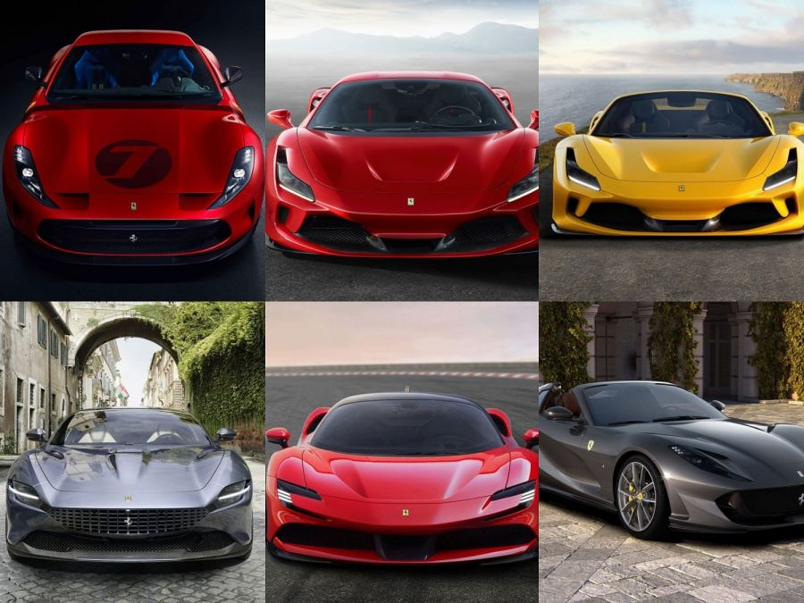

infromation about ferrai car
Ferrari is an Italian sports car manufacturer with its official headquarters located in Italy, specifically in Maranello.
It was founded by Enzo Ferrari in 1947, and the brand is considered by Italians to be “the most famous in the history of cars.”
The history of Ferrari began as Scuderia Ferrari, which was the division responsible for car racing at Alfa Romeo at
and which was founded by Enzo Ferrari in 1929.From the 166 MM, Enzo Ferrari's first car to bear his name,
the time and the last La Ferrari, Ferrari always evokes an "irresistible charm". Enzo Ferrari also liked to describe
the Ferrari car as “an example of a beautiful machine for men who have the desire to reward themselves,
to fulfill a dream and breathe long into the fire of their passionate life events.
” It is the LaFerrari model that the company announced at the Geneva International Motor Sho
For more information, click on the information about ferrai
WHAT ARE THE TYPES OF FERRAI CARS ?
- Ferrari roma spider
- purosangue
- portofino M
- 812 GTS
- 296 GTP
- ...
| type |
power |
speed |
weight |
| Ferrari roma spider |
600 |
100 in 2,5s |
760 |
| purosangue |
700 |
100 in 4s |
888 |
| portofino M |
800 |
100 in 5s |
777 |
PICTURES OF SOME TYPE OF FERRARI CARS :

infromation about motor ferrai car:
The Ferrari F40 (Type F120) is a mid-engine, rear-wheel drive sports car[12] engineered by Nicola Materazzi
with styling by Pininfarina. It was built from 1987 until 1992, with the LM and GTE race car versions continuing production
until 1994 and 1996 respectively.[15] As the successor to the 288 GTO (also engineered by Materazzi), it was designed to
celebrate Ferrari's40th anniversary and was the last Ferrari automobile personally approved by Enzo Ferrari.
[1] At the time it was Ferrari's fastest, most powerful, and most expensive car for sale.[16]
The car debuted with a planned production total of four hundred units and a factory suggested retail price of approximately
US$400,000 (fivefold the price of its predecessor, the 288 GTO[17]) in 1987 ($1,070,000 today).[18] One of those that belonged
to the Formula One driver Nigel Mansell was sold for the then record of £1 million in 1990, a record that stood into the 2010s
19][20] A total of 1,311[1][21] to 1,315 cars were manufactured with 213 units destined for the United States.[22]
For more information, click on the information about ferrai